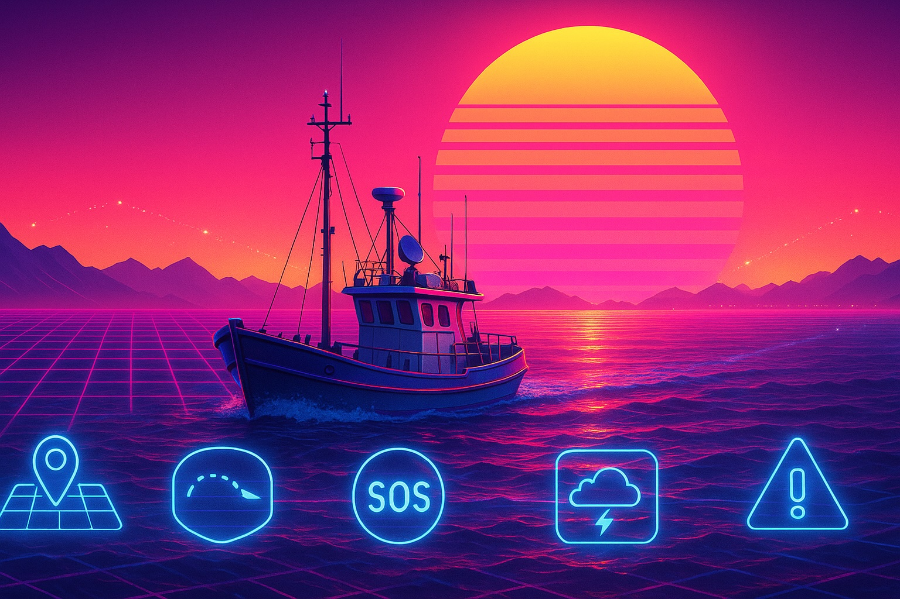

跨境物流與供應鏈可視化
（港澳珠三角跨境卡車）
應用內容
北斗高精度定位（厘米級）與雙向短報文通信，能讓跨境卡車在「珠海-澳門」「深圳-香港」等通道上做到：* 實時位置追蹤（比 GPS 精準 3～5 倍）
* 跨境通關路線最佳化（預測擁堵、智能選路）
* 貨櫃狀態監控（震動、溫度、開關門紀錄）
* 非法改道與異常停車警報
價值
* 對物流企業：降低走失風險、提升準點率* 對海關/口岸：提升貨車管理效率
* 對企業客戶：供應鏈真正做到「端到端可視化」

跨境漁船與海事安全
（南中國海—大灣區）
應用內容
北斗短報文天通能力讓漁船在 **無行動網路** 的海域仍可：* 提交位置、作業海域、回港時間
* 發送求救訊息（無信號也可送達）
* 接收氣象預警、禁漁通知
跨境海事中心（台山、珠海、澳門船政）可共享船舶資訊。
價值
* 大幅提升離岸安全* 降低搜救成本
* 口岸間海上活動資訊同步（避免誤判越界）

跨境智慧監管
（危險品車輛、冷鏈、工程車）
應用內容
超高精度定位 + 域間資料互通，可支援：* 危化品：軌跡、偏離警報、急煞車上報
* 冷鏈：溫濕度、震動、位置完整紀錄（防止串改）
* 工程車：珠海—澳門建材運輸智慧審批
定位資料可寫入不可竄改的區塊鏈。
價值
* 打擊偽造運輸紀錄* 提升跨境政府協作
* 危險品運輸更安全、更透明

跨境旅遊與移動服務
（港澳＋大灣區）
應用內容
北斗定位與室外/室內融合導航：* 跨境自駕的轉向級導航
* 港珠澳大橋、青茂口岸步行導航
* 景區人流預測（AI + 北斗定位）
* 大灣區旅遊 APP 互通定位資料
未來可結合 AR 做跨境文化導覽。
價值
* 旅客體驗提升* 景區獲得人流熱力數據
* 跨境旅遊一體化